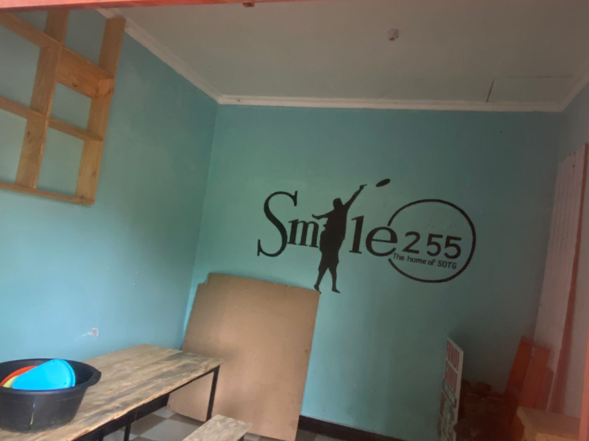
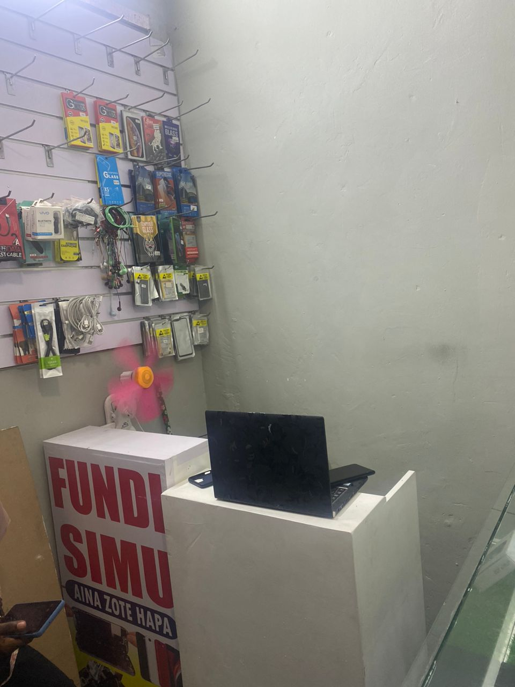

Smile255 2023 Business Report Taarifa Kuhusu Biashara ya Smile255 kwa Mwaka 2023
This year, we started the smile businesses with the goal of providing jobs for our players and using the profits to send the Smile255 team to tournaments. We had a fundraiser and with the generous support of our sponsors raised $1334! Our original idea was to make a juice business selling cold drinks on hot Dar es Salaam days. As it came time to make the business a reality we ran into many obstacles and learned a lot. We ended up splitting the start-up capitol between three businesses. Below is a brief description of how things progressed this year and where we stand now. We started with the juice business near where we play frisbee in Kitunda, but with the cold season there wasn't enough traffic to make it profitable. We then tried adding to that shop by also selling phone accessories. At the same time we opened a stand in Kariokoo (a bigger market) doing phone repairs. As our director, Mwinyi, has some experience with this work, the phone repair stand was quickly successful. Because of the success and the better location in Kariokoo, we decided to move the phone accessories in with the phone repair. This left the cheaper shop in Kitunda often unused, however it had already become a valuable meeting place for us so we decided to keep it and still run the juice business from there when the season is right. At other times in the year we are still taking orders for juice, but it is not profitable to run the operation every day. At the end of the year our total capitol was around $885 with the possibility of getting refunded $130 by one of our landlords for a month of rent that we did not use. You can look for a more detailed breakdown of how the money was used on the website. Despite losing some money trying to figure out what worked best we view this year as a success because of the lessons we learned. We are very excited for 2024 as we will be able to continue doing what worked and change the things that caused problems. Below are the benefits and challenges of each business and the steps we are planning to take to deal with the challenges in 2024. Juice We originally thought that a juice and ice cream store would be a good fit as it seemed like it would be easy for the students to work at flexible times and did not require much technical knowledge. This business proved to be more difficult than expected, below are some of the pros and cons. Pros [i] In the summer months it is easy to sell a large amount of juice to make a profit [ii] Since there is no training needed for the workers there are no startup costs for each new employee [iii] Multiple players can be employed at the same time [iv] The rent for the stand is relatively cheap per month (and serves as a team meeting space) Cons [i] Must pay for electricity for the freezer and juice making equipment [ii] During the cold season there are not enough sales for it to be a viable business [iii] When fruits and sugar are out of season the costs gets high so there is very little profit [iv] When we tried to sell based on orders there is also the added cost of transportation and it is risky as the buyer might back out at the last minute and not pay Phone Repair and Accessories Pros [i] Phone repair has been providing us with consistent profit each month, it has been able to help us get money to pay employees, taxes, and other office services [ii] The customers are consistent year-round, unlike juice [iii] The amount that we bring in during a given rental period is about twice the capitol needed to start [iv] Gives the players knowledge and skills that are useful even when they leave Smile255. They will be able to use these skills to start their own businesses if they want [v] Because of the consistency of the salary, the players are able to be more independent in their lives Cons [i] Most of the time we rent from tenants, not landlords, so it's not possible to have an official contract, this makes it much less secure and puts us at the whim of the person we are renting from [ii] It takes time to train the players to get to a point where they can independently work [iii] Since we don't have many of the fancy accessories we are turning less of a profit [iv] Technical equipment is needed for some phone repairs but it is expensive, this is needed in order to keep up with the other phone technicians [v] Don't have enough saved for emergencies. For example, if one of the players accidentally breaks a phone screen while trying to fix something else We are planning to continue the phone business year-round and continue the juice business when the season is right. In addition, we will keep the juice shop in Kitunda as the Smile255 headquarters as it is fairly cheap to rent. This will let us continue to sell juice to order year round and also allows Smile255 to be viewed as more official by the government, parents, and new players. Lastly, we realized that only doing a yearly report left a lot of holes in our understanding of where money went so we will be doing quarterly internal reports to be more on top of our finances. Below are our program goals for this year. Goals for Smile255 2024 [i] To register Smile255 with the government at the village level [ii] To improve and increase the frequency of our school frisbee programs [iii] Starting to practice in open fields to attract new players [iv] Increasing the number of female players [v] Organizing and participating in the Kilimanjaro tournament in May Goals for East Africa 2024 [i] To sponsor talented young players from all over to play at the most competitive frisbee competitions [ii] To organize and sponsor a prize at tournaments for young people in order to be able to keep a level playing field between young people and experienced players [iii] To work with tournament organizers to keep student participation fees low to help young people participate easily Mwaka huu, tulianza biashara ya smile255 kwa lengo la kutoa kazi kwa wachezaji wetu na kutumia faida kutuma timu ya smile255 kwenye mashindano. Tulikuwa na uchangishaji na usaidizi mkubwa wa fadhili wetu tulichangisha 1334$. Wazo letu la awali lilikuwa kufanya biashara ya kuuza juisi pamoja na vinywaji baridi siku za joto kwa Dar es Salaam. Ulipofika wakati wa kuifanya biashara tulikumbana na vikwazo vingi na kujifunza mambo mengi. Tuliishia kugawanya makao makuu ya biashara zetu kwa kuzigawa makundi matatu. Hapo chinikuna maelezo mafupi ya jinsi mambo yalivyoenda mwaka huu kuanzia tulipoanza na mpaka hapa tulipofikia. Tulianza na biashara ya juisi karibu na tunapocheza frisbee hukokitunda, lakini kwa msimu wa baridi hakukua na biashara ya kutosha kupata faida. Baada ya kuona mambo hayaendi sawa tulijaribu kuongeza kuuza katika duka hilo biashara ya kuuza vifaa vya simu. Wakati huo huo pia tulianzisha biashara nyingine ya ufundi simu karibu na stendi kuu ya mwendokasi kando ya Barabara ya uhuru na msimbazi. Kama alivyoshauri mkurugenzi wetu Mwinyi kwa sababu yeye ana uzoefu wa kutosha na kazi hyo. Biashara ya kutengeneza simu ilifanikiwa haraka sana. Kwa sababu ya mafanikio na eneo la Kariakoo kuwa bora kwa biashara yetu tuliamua kuamua kuhamisha vifaa vya simu kutoka ofisi ya kitunda kwenda Kariakoo, hii iliacha duka letu la kitunda kutotumika mara kwa mara na kuamua kulifanya duka hilo kama mahala pa kufanyia mikutano yetu na pia tufanye biashara ya juisi pale msimu wa biashara hyo unapokuja kwa sababu muda mwingine tunachukua oda za juisi, lakini haitoi faida ya kutosha kuweza kuendesha shuhuli zetu za kila siku. Mwisho wa mwaka jumla ya mtaji mkuu wetu ulikuwa ni $885 na uwezekano wa kurejeshewa $130 na mmoja wa wamiliki wa sehemu zetu za kufanyia biashara [fremu] kwaajili ya jufidia mwezi mmoja wa kodi ambao hatukuutumia. Unaweza kutafuta mchanganuowa kina zaidi wa namna kwa jinsi pesa zilivyotumika kwenye wavuti ya timu yetu. Licha ya kupoteza baadhi ya pesa katika kujaribu kubani ni ninikilifanya kazi zaidi tunauona mwaka huu kuwa wa mafanikio kupitia tuliyojifunza. Tunafurahia sana 2024 tutaweza kufanya yale yaliofanya kazi na kubadilisha mambo yaliyoleta changamoto. Yafuatayo ni manufaa pamoja na changamoto za kila biashara na hatua tunazopanga kuchukua ilikukabiliana na changamoto hizo kwa mwaka 2024. Juisi Hapo awali tulidhani kuwa duka la jisi na aiskirimu lingefaa kwani ilionekana kuwa itakuwa rahisi kwa wanafunzi kufsnys kaz kwa nyakati zinazobadilika na haikuhitaji maarifa mengi ya kiufundi. Biashara hii imeonekana kuwa ngumu zaidi kuliko ilivyotarajiwa,hapo chini tumejaribu kubainisha baadhi ya faida na hasara Faida [i] Katika miezi ya kiangazi nirahisi kuuza kiasi kikubwa cha juisi na kuweza kupata faida [ii] Kwakua hakuna mafunzo yanayohitajika kwa wafanayakazi hvyo kunakuwa hakuna gharama za kuanza kwa kila mfanyakazi mpya [iii] Wanafunzi wengi wanaweza kuajiriwa kwa wakati mmoja [iv] Kodi ya seem ya kufanyia biashara ni nafuu kulinganisha na kodi ya ofisi ya ufundi simu na pia timu hutumia ofisi hyokama sehem ya kufanyia mikutano na ofisi pia Changamoto [i] Ni lazima kulipia umeme kwa freezer na vifaa vya kutengenezea juisi [ii] Wakati wa msimu wa baridi hakuna mauzo ya kutosha ili kuwa na biashara yenye faida [iii] Matunda na sukari yanapokuwa nje ya msimu gharama ya utengenezajihua kubwa kuliko bei ya kuuza hvyo tunapata faida kiduchu [iv] Tulipojaribu kuuza kutokana na oda tunazopata kutokana na oda pia kuna gharama iliyoongezwa ya usafiri na ni hatari kwani kwani mnunuzi muda mwingine anakuwa halipi kwa wakati ama asilipe kabisa Ufundi Simu na Accessories Faida [i] Ukarabati wa simu umekuwa ukitupa faida thabitikila mwezi ,umeweza kutusaidia kupata pesa za kutosha kulipa wafanyakazi, kodi na huduma zingine za ofisi [ii] Wateja ni wa uhakika mwaka mzima ukilinganisha na juisi [iii] Kiasi tunachopata kwa kipindi kifupi tunachokodisha ofisi ni mara ya mtaji unaohitajika ili kuanza biashara hii [iv] Huwapa wachezaji ujuzi na maarifa ambayo hata wanapoondoka Smile255 wataweza kutumia ujuzi huu kuanziasha biashara zao wenyewe [v] Kwa sababu wa uthabiti wa kuweza kupata mshahara, wachezaji wanaweza kuwa huru zaidi katika Maisha yao Changamoto [i] Mara nyingi tunakodisha sehem zatu za kufanyia biashara toka kwa wapangaji na sio wamiliki wa nyumba kwa sababu unahtaji kuwa na pesa nyingi ili kuweza kukodi eneo la kufanyia biashara mwenyewe Kariakoo pia utahitaji kulipa madalali ilikuweza kupata eneo, hii inasababisha kuwa na usalama mdogo mara nyingi tunafanya kutokana na matakwa ya mtu aliyetupagisha [ii] Inachukua muda kuwafundisha wachezaji ili kuweza kufika mahala ambapo wanaweza kujitegemea [iii] Kwakuwa hatuna vitendea kazi vya kutosha hvyo tunapunguza faida kwa sababu tunahtaji kupeleka kazi kwa mafundi wenye vifaa kuliko vyetu na tunalipia [iv] Vifaa vya kiufundi vinahtajika zaidi kwaajili ya ukarabati wa baadhinya simu lakini ni ghali, lakini ukweli ni lazima tujipange kuweza kununua ili kuweza kuendana na mahitaji ya soko [v] Huna hifadhi ya kutosha kwaajili ya dharura kwa mfano, ikiwa mmoja wa wachezaji atavunja skrini ya simu kwa bahati mbaya akijaribu kurekebisha kitu kingine Tunapanga kuendeleza biashara ya simu mwaka mzima na kuendelea na biashara ya juisi msimu utakapowadia. Aidha tutaweka duka la juisi huko kitunda na pia tutatumia duka hilo kama makao makuu ya Smile255 kwa kuwa ni nafuu kukodisha. Hii itaturuhusu kuweza kuendelea kuuza juisi na pia itafanya Smile255 kuonekana rasmi zaidi na serikali, wazazi na wachezaji wapya. Mwishowe tuligundua kuwa ripoti ya kila mwaka iliweza kutusababisha kurikodi taarifa nyingi muhimu wa taarifa yetu ya wapi pesa zilienda hvyo tutafanya ripoti kila baada ya miezi mitatu ya fedha zetu. Yafuatayo ni malengo ya program yetu ya mwaka huu. Malengo kwa Smile255 ya 2024 [i] Kusajili smile255 katikangazi ya Kijiji [ii] Kuongeza na kuboresha program zetu za frisbee mashuleni [iii] Kuanza kufanya mazoezi kwenye viwanja vya azi ili kuweza kuvutia wachezaji wapya [iv] Kuongeza idadi ya wachezaji wa kike [v] Kuandaa na kusiriki mashindano ya Kilimanjaro kwa mwezi mei Malengo kwa Afrika Mashariki ya 2024 [i] Kudhamini vijana chipukizi kucheza mashindano mbali mbali ya frisbee hasa yale makubwa [ii] Kuandaa na kudhamini zawadi ya vijana chipukizi ili kuweza kuweka uwanja sawa baina ya vijana na wachezaji wazoefu [iii] Kujitolea kushauri na kushiriki njia zinazoweza kusaidia ada ya ushiriki wa wanafunzi ikuwa chini ili kuwasaidia vijana kushiriki kwa urahisi
 